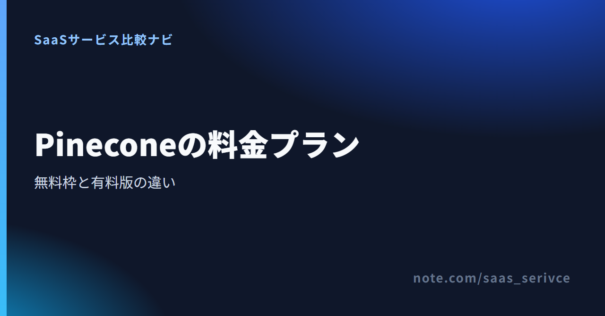

Pineconeは、AI検索やRAGで使うベクトルデータベースです。料金プランは無料のStarterからEnterpriseまであり、それぞれ上限と課金方式が異なります。
無料枠の範囲や有料へ移る目安、日本からの支払い、解約条件を紹介します。
Standardには、21日間・300ドル分の試用があります。一部の組織は対象外です。期限のないStarterの無料枠とは分けて考えます。
公式ページでは、各プランの課金方式と上限をまとめて見られます。
1プロジェクトと合計2GBで足りる検証なら、期限のないStarterから始められます。
月額を固定しつつ上限を広げたい場合はBuilderが候補です。ただし、上限に達するとリクエストが止まります。
利用量に応じて支払い、上限に達しても処理を止めたくない場合は、Standardが候補です。Enterpriseでは上限がさらに広がり、99.95%の稼働率SLAが付きます。
1ドル=157円で換算すると（執筆時点の目安。為替で変動）、Builderは約3,140円です。Standardの最低利用額は約7,850円、Enterpriseは約78,500円になります。
小さなデータを使い、検索結果やRAGの回答を評価するのに向くプランです。Database On-DemandのインデックスはAWSのus-east-1に限られます。
各インデックスでは1,000 namespaceまで使えます。上限を超えても追加請求はありませんが、それ以上のリクエストはブロックされます。
月50ドルは、その月の利用分に充当されます。利用額が50ドルを超えた場合だけ、超過分が加算される仕組みです。
Enterpriseには99.95%の稼働率SLAがあります。プロジェクト数やインデックス数に加え、このSLAが必要かどうかがStandardとの分かれ目です。
現在の利用量を当てはめ、プランごとの上限と最低利用額を見比べられます。
Starterは期限付きの試用版ではありません。クレジットカードを登録せずに無料アカウントを作れます。
Database On-Demandで使える範囲は、1プロジェクト、2ユーザー、最大5インデックスです。各インデックスには100 namespaceを作れます。
顧客や部署ごとにプロジェクトを分ける設計では、容量を使い切る前に1プロジェクトの制限に達する場合があります。
保存容量は合計2GBです。毎月の処理量には、100万Read Units（RU）と200万Write Units（WU）の上限があります。Pineconeから外部へ送るegressは月1GBまでです。
RUは検索などの読み取り、WUはデータの登録や更新で消費します。
社内文書の一部を登録し、検索結果やRAGの回答を試す段階に合います。無料枠に収まるかは、文書数だけでは決まりません。
ベクトルのサイズや更新回数、検索方法によってRUとWUの消費量が変わるためです。
Standardには21日間・300ドル分の試用があります。対象外となる組織もあります。
Starterは期限のない無料プランです。一方、Standardの試用は、有料プランを限られた期間で評価する仕組みです。
StandardとEnterpriseでは、最低利用額を超えた分が従量課金されます。月額を正確に出すには、公式料金ページの計算ツールへ利用量を入れて見積もります。
Pineconeの従量分は、保存量、読み取り、書き込み、外部へのデータ転送で変わります。検索回数だけで月額は決まりません。
登録データの容量と更新頻度も、料金計算ツールへ入力します。
Builderは予算を月20ドルに固定できます。その代わり、上限に達した後も処理を続ける設計ではありません。
リクエスト停止を許容できない場合は、上限に近づく前にStandardへの変更を検討します。
Standardでは、月50ドルをその月の利用分に充てます。最低額と利用額を二重に足す方式ではありません。
利用額が最低額を超える月は、超過分が追加されます。毎月の処理量が変わるサービスでは、固定費だけでなく従量分も予算に含めておきます。
最初に見るのは、プロジェクト数、保存量、インデックス数、月間RU・WUです。上限に達したとき、処理が止まってもよいかどうかも判断の分かれ目です。
Starterの範囲で足りるなら、無料のまま使えます。定額で上限を広げたいならBuilder、停止を避けたいならStandardが候補です。99.95%の稼働率SLAが必要ならEnterpriseを検討します。
料金計算ツールを使うと、保存・読み取り・書き込みなどの利用量から費用を見積もれます。
オンライン契約の料金はUSD建てです。支払い方法はプランによって異なり、利用明細が入った請求書PDFは管理画面から取得できます。
日本から契約する場合も米ドルで請求されます。カード会社などが課す海外利用の手数料は、利用者の負担です。
予算には、プラン料金に加えて為替の変動とカード会社の手数料を含めます。
Builderの支払いはクレジットカードまたはデビットカードです。クラウドマーケットプレイス経由では契約できません。
StandardとEnterpriseでは、カードのほか、次の経路を選べます。
これは各マーケットプレイスを経由する決済手段です。Pineconeとの直接契約で請求書払いができることを示すものではありません。
Pinecone Consoleの「Settings > Billing > Overview」から、請求期間ごとの明細入り請求書をPDFでダウンロードできます。
請求書PDFは、支払い後の確認にも使えます。後払いの請求書決済とは区別します。
日本発行カード、JCB、PayPalの利用可否は、公式の公開情報では確認できません。適格請求書を発行する事業者の登録番号がPDFに記載されるかも不明です。
料金は税別で案内されています。税の扱いは契約経路や事業者の状況で異なるため、必要に応じて税理士へ確認してください。
Pineconeの上限や課金方式が要件と合わない場合は、別のベクトルDBも比較対象になります。まず、無料枠の容量、上限に達したときの停止、SLAの違いを比べます。
無料で保存したいデータが合計2GBを超える場合や、複数プロジェクトが必要な場合は、Pineconeの有料化と他製品を比べます。
Builderまで広げるなら、合計10GBに収まるか、上限後に処理が止まってもよいかを先に決めます。
自社サーバーで動かす製品と比べるときは、サービス利用料だけでは判断できません。サーバー費用に加え、更新や障害対応を担当する人の作業も費用になります。
Pineconeの料金計算結果と、自社で保守する場合の総額を同じ期間で比べます。
Enterpriseには99.95%の稼働率SLAがあります。Starterには稼働率SLAの掲載がありません。BuilderとStandardは、DeveloperまたはProサポートの追加で応答SLAを利用できます。
契約上のサポート言語は英語です。日本語窓口と管理画面の日本語表示は、公式の公開情報では確認できません。
Pineconeでプランを下げるときは、Starterの上限を超えるリソースを残せません。保持しないデータやバックアップは削除されます。
別製品への移行も視野に入るなら、インデックスを削除する前にデータの退避先と移行手順を決めます。
組織のOwnerまたはBilling Adminは、管理画面からStarterへ変更できます。手続き前に、無料枠へ残すリソースを選びます。
手順は次のとおりです。
カード契約では、手続きした時点で課金が終了します。当月に発生した利用分は最終請求書にまとめられます。
Starterの上限を超えるプロジェクトやインデックスは、そのまま残せません。Assistantやメンバーも選別の対象です。
保持しないリソースに加え、バックアップスケジュールやcollectionsも削除対象になります。
通常の解約では返金されません。契約で定める重大な違反などの例外は、一般的な返金保証とは異なります。
契約前に、Starterへ戻した後の上限と現行プランの条件を見直せます。
残さないリソースとバックアップは削除されます。必要なデータは、ダウングレードの操作を始める前に退避します。
特に合計2GBや最大5インデックスを超えている場合は、Starterへ残す対象を先に決めます。
Pinecone Consoleから、請求期間ごとの明細入り請求書をPDFで取得できます。ただし、請求書PDFの取得と後払いの請求書決済は別です。
料金だけで決めず、必要な上限と、上限に達した後も処理を続けるかどうかで選びます。
1プロジェクトで足り、保存量と月間処理量が無料枠に収まる人です。カードを登録せず、小さなデータで検証を始められます。
Starterより広い上限が必要で、支出を固定したい人に合います。上限後にリクエストが止まっても支障がないことが前提です。
上限に達した後も処理を続けるなら、Standardが候補です。Enterpriseは、さらに高い上限や99.95%の稼働率SLAが必要な場合に検討します。
現在のデータ量と処理量を当てはめ、各プランの条件を比べられます。